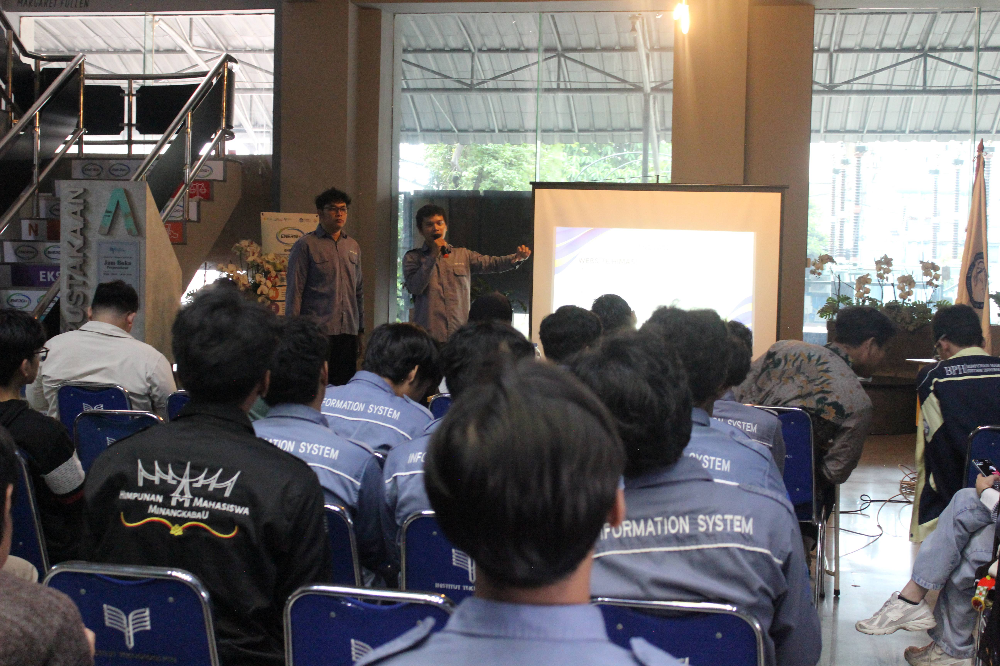

Debat Terbuka Calon Ketua HIMASI ITPLN
Diterbitkan pada: 03 Oktober 2026 | Kategori: Politik Kampus

Dokumentasi Debat Cakahim dan CawakahimAcara Debat Calon Ketua HIMASI ITPLN telah sukses diselenggarakan di Lobby Depan ITPLN. Kegiatan ini mempertemukan para kandidat untuk memaparkan visi, misi, serta gagasan terbaik mereka demi kemajuan Himpunan Mahasiswa Sistem Informasi.